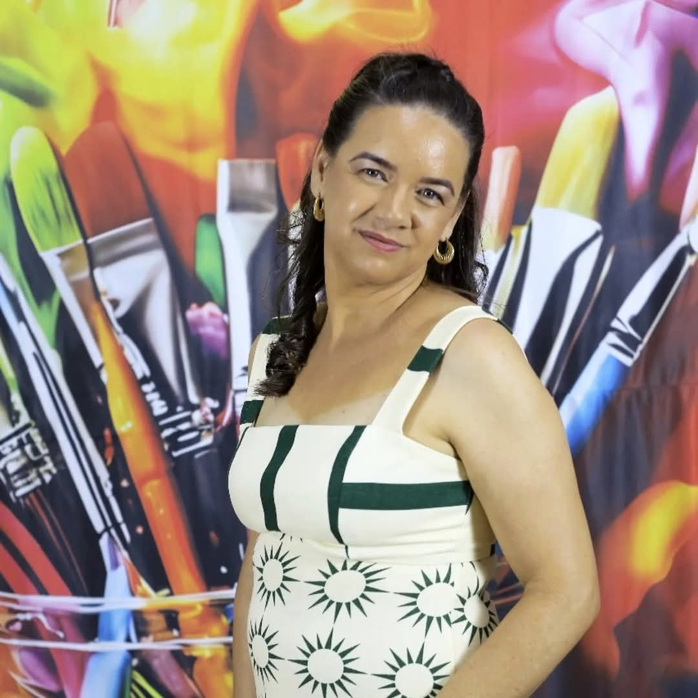

Quem Sou

Alexia Costa
Fundadora do Gostinho de Minas
Minha História
Sou natural do interior de Minas Gerais, uma terra conhecida por suas tradições, hospitalidade e
sabores que fazem parte da vida de muitas famílias. Foi nesse ambiente simples e acolhedor que
aprendi a valorizar o trabalho, a dedicação e a importância de fazer tudo com carinho.
Desde muito nova, sempre tive um espírito empreendedor e o sonho de construir meu próprio
negócio. Gostava da ideia de conquistar meus objetivos por meio do meu esforço e de oferecer
algo de qualidade para as pessoas.
Com o passar do tempo, descobri que me identificava muito com a área da alimentação e que tinha
facilidade para trabalhar nesse ramo. Foi então que comecei a produzir e vender meus produtos,
transformando uma paixão em uma oportunidade de crescimento. Cada venda realizada e cada cliente
satisfeito me motivavam a continuar evoluindo e aperfeiçoando meu trabalho.
Hoje, através do Gostinho de Minas, tenho a oportunidade de compartilhar pratos saboroso com
carinho, levando um pouco das tradições mineiras e do sabor caseiro para a mesa de cada cliente.
Meu objetivo é continuar crescendo, conquistando novos clientes e transformando esse sonho em
uma empresa cada vez mais forte e reconhecida.
Como Tudo Começou
Em busca de novas oportunidades, me mudei para São Sebastião. A mudança trouxe muitos desafios e
dificuldades, mas também fortaleceu minha determinação de conquistar meus objetivos. Mesmo
diante dos obstáculos, nunca deixei de acreditar no meu potencial e nos meus sonhos.
Por sempre gostar da área da alimentação e receber o apoio de pessoas importantes ao meu redor,
decidi investir no ramo fazendo pães de queijo e bolos. Comecei com dedicação, carinho e a
vontade de
oferecer produtos de qualidade, preparados com aquele sabor caseiro que lembra os melhores
momentos em família.
Cada cliente conquistado, cada pedido realizado e cada elogio recebido se tornaram combustível
para continuar crescendo. Hoje, sigo trabalhando para transformar esse sonho em uma empresa cada
vez mais forte, levando o verdadeiro Gostinho de Minas para mais pessoas.
Minha Motivação
Minha maior motivação é ver as pessoas apreciando os produtos que preparo com tanto carinho.
Saber que um pão de queijo ou um bolo pode fazer parte de momentos especiais, encontros em
família ou simples momentos de felicidade é algo que me inspira todos os dias.
Também me motiva o desejo de crescer cada vez mais, expandir o negócio e transformar esse sonho
em uma empresa sólida, reconhecida pela qualidade, pelo atendimento e pelo sabor caseiro que
fazem parte da sua essência.
Do nosso forno para a sua mesa
Cada receita é preparada com carinho, tradição e ingredientes selecionados para levar sabor e aconchego para os melhores momentos da sua família.